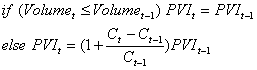

The Negative Volume Index (NVI), as well as the Positive Value Index (PVI), indicator tracks the changes in the number of transactions, or trading volume, of an instrument. Price changes on decreasing trading volume are considered to be a positive indicator, while price changes during periods of increased trading volume are considered to be a negative indicator. The idea behid the indicator is that well-informed traders are involved when trading volumes decrease, while increasing trading volumes can indicate a follow-the-crowd mentality.
The MVI displays what the "smart money" is doing; while the PVI tracks what the "not-so-smart money" is doing.
{% include chrt-ti-images.html %}
Negative volume index is calculated as follows: